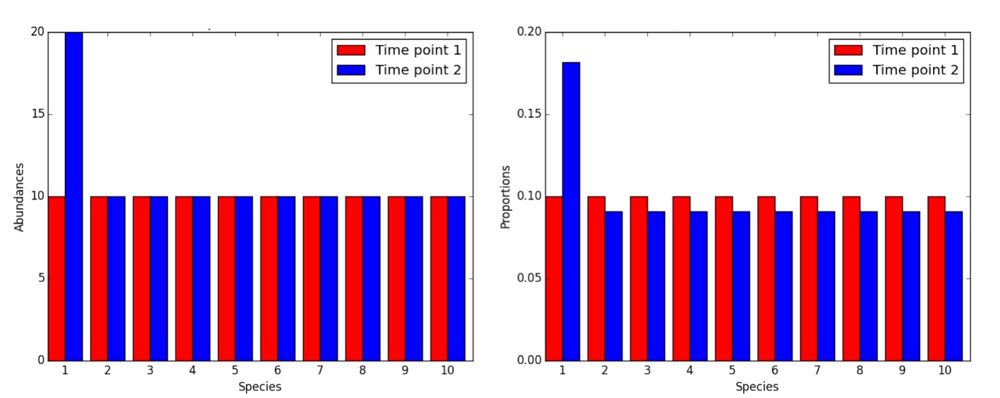
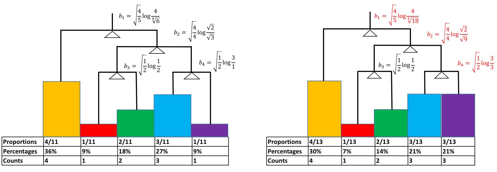

Differential abundance analysis with gneiss¶
Note
This guide assumes you have installed QIIME 2 using one of the procedures in the install documents and completed the moving pictures tutorial.
In this tutorial you will learn how to perform differential abundance analysis using balances in gneiss. The main problem that we will focus on is how to identify differentially abundant taxa in a compositionally coherent way.
Compositionality refers to the issue of dealing with proportions. To account for differences in sequencing depth, microbial abundances are typically interpreted as proportions (e.g. relative abundance). Because of this, it becomes challenging to infer exactly which microbes are changing – since proportions add to one, the change of a single microbe will also change the proportions of the remaining microbes.
Consider the following example:
On the left, we have the true abundances of ten species, and the first species doubles between Time point 1 and Time point 2. When we normalize these to proportions, it appears as if all of the species have changed between the two time points. Looking at proportions alone, we would never realize this problem, and we actually cannot exactly determine which species are changing based on proportions alone.
While we cannot exactly solve the problem of identifying differentially abundant species, we can relax this problem and ask which partitions of microbes are changing. In the case above, if we compute the ratio between the first species and the second species, that ratio will be 1:1 at Time point 1, and 2:1 at Time point 2 for both the original abundances and the proportions. This is the type of question that balances try to solve. Rather than focusing on individual taxa, we can focus on the ratio between taxa (or groups of taxa), since these ratios are consist between the true abundances and the observed proportions of the species observed. We typically log transform these ratios for improved visualization (‘log ratios’). The concept of calculating balances (or ratios) for multiple species can be extended to trees as shown in the following example.
On the left, we define a tree, where each of the tips corresponds to a taxon, and underneath are the proportions of each taxon in the first sample. The internal nodes (i.e. balances) define the log ratio between the taxa underneath. On the right is the same tree, and underneath are the proportions of each taxa in a different sample. Only one of the taxa abundances changes. As we have observed before, the proportions of all of the taxa will change, but looking at the balances, only the balances containing the purple taxa will change. In this case, balance \(b_3\) won’t change, since it only considers the ratio between the red and taxa. By looking at balances instead proportions, we can eliminate some of the variance by restricting observations to only focus on the taxa within a given balance.
The outstanding question here is, how do we construct a balance tree to control for the variation, and identify interesting differentially abundant partitions of taxa? In gneiss, there are three main ways that this can be done:
- Correlation clustering. If we don’t have relevant prior information about how to cluster together organisms, we can group together organisms based on how often they co-occur with each other. This is available in the
correlation-clusteringcommand and creates tree input forilr-hierarchical. - Gradient clustering. Use a metadata category to cluster taxa found in similar sample types. For example, if we want to evaluate if pH is a driving factor, we can cluster according to the pH that the taxa are observed in, and observe whether the ratios of low-pH organisms to high-pH organisms change as the pH changes. This is available in the
gradient-clusteringcommand and creates tree input forilr-hierarchical. - Phylogenetic analysis. A phylogenetic tree (e.g.
rooted-tree.qza) created outside of gneiss can also be used. In this case you can use your phylogenetic tree as input forilr-phylogenetic.
Once we have a tree, we can calculate balances using the following equation:
where \(i\) represents the \(i^{th}\) internal node in the tree, \(g(x)\) represents the geometric mean within set \(x\), and \(x_r\) represents the set of taxa abundances in the numerator of the balance, \(x_s\) represents the set of taxa abundances in the denominator of the balance, and \(r\) and \(s\) represents the number of taxa within \(x_r\) and \(x_s\) respectively.
After the balances are calculated, standard statistical procedures such as ANOVA and linear regression can be performed. We will demonstrate running these procedures using the Chronic Fatigue Syndrome dataset.
Creating balances¶
In the Chronic Fatigue Syndrome dataset published in Giloteaux et al (2016), there are 87 individuals with 48 diseased patients and 39 healthy controls. The data used in this tutorial were sequenced on an Illumina MiSeq using the Earth Microbiome Project hypervariable region 4 (V4) 16S rRNA sequencing protocol.
Before beginning this tutorial, create a new directory and change to that directory.
mkdir qiime2-chronic-fatigue-syndrome-tutorial
cd qiime2-chronic-fatigue-syndrome-tutorial
The datasets required for this tutorial can be found below (to learn how these would be generated, see the moving pictures tutorial).
Download URL: https://data.qiime2.org/2018.11/tutorials/gneiss/sample-metadata.tsv
Save as: sample-metadata.tsv
wget \
-O "sample-metadata.tsv" \
"https://data.qiime2.org/2018.11/tutorials/gneiss/sample-metadata.tsv"
curl -sL \
"https://data.qiime2.org/2018.11/tutorials/gneiss/sample-metadata.tsv" > \
"sample-metadata.tsv"
Download URL: https://data.qiime2.org/2018.11/tutorials/gneiss/table.qza
Save as: table.qza
wget \
-O "table.qza" \
"https://data.qiime2.org/2018.11/tutorials/gneiss/table.qza"
curl -sL \
"https://data.qiime2.org/2018.11/tutorials/gneiss/table.qza" > \
"table.qza"
Download URL: https://data.qiime2.org/2018.11/tutorials/gneiss/taxa.qza
Save as: taxa.qza
wget \
-O "taxa.qza" \
"https://data.qiime2.org/2018.11/tutorials/gneiss/taxa.qza"
curl -sL \
"https://data.qiime2.org/2018.11/tutorials/gneiss/taxa.qza" > \
"taxa.qza"
First, we will define partitions of microbes for which we want to construct balances. Again, there are multiple possible ways to construct a tree (i.e. hierarchy) which defines the partition of microbes (balances) for which we want to construct balances. We will show examples of both correlation-clustering and gradient-clustering on this dataset.
Note that the differential abundance techniques that we will be running will utilize log ratio transforms. Since it is not possible to take the logarithm of zero, both clustering methods below include a default pseudocount parameter. This replaces all zeroes in the table with a 1, so that we can apply logarithms on this transformed table.
The input table is the raw count table (FeatureTable[Frequency]).
Option 1: Correlation-clustering¶
This option should be your default option. We will employ unsupervised clustering via Ward’s hierarchical clustering to obtain Principal Balances. In essence, this will define the partitions of microbes that commonly co-occur with each other using Ward hierarchical clustering, which is defined by the following metric.
Where \(x\) and \(y\) represent the proportions of two microbes across all of the samples. If two microbes are highly correlated, then this quantity will shrink close to zero. Ward hierarchical cluster will then use this distance metric to iteratively cluster together groups of microbes that are correlated with each other. In the end, the tree that we obtain will highlight the high level structure and identify any blocks within in the data.
qiime gneiss correlation-clustering \
--i-table table.qza \
--o-clustering hierarchy.qza
Option 2: Gradient-clustering¶
An alternative to correlation-clustering is to create a tree based on a numeric metadata category. With gradient-clustering, we can group taxa that occur in similar ranges of a metadata category. In this example, we will create a tree (hierarchy) using the metadata category Age. Note that the metadata category can have no missing variables, and must be numeric.
qiime gneiss gradient-clustering \
--i-table table.qza \
--m-gradient-file sample-metadata.tsv \
--m-gradient-column Age \
--o-clustering gradient-hierarchy.qza
An important consideration for downstream analyses is the problem of overfitting. When using gradient-clustering, you are creating a tree to best highlight compositional differences along the metadata category of your choice, and it is possible to get false positives. Use gradient-clustering with caution.
Building linear models using balances¶
Now that we have a tree that defines our partitions, we can perform the isometric log ratio (ILR) transform. The ILR transform computes the log ratios between groups at each node in the tree.
qiime gneiss ilr-hierarchical \
--i-table table.qza \
--i-tree hierarchy.qza \
--o-balances balances.qza
Now that we have the log ratios of each node of our tree, we can run linear regression on the balances. The linear regression that we will be running is called a multivariate response linear regression, which boils down to performing a linear regression on each balance separately.
We can use this to attempt to associate microbial abundances with environmental variables. Running these models has multiple advantages over standard univariate regression, as it avoids many of the issues associated with overfitting, and can allow us to gain perspective about community-wide perturbations based on environmental parameters.
Since the microbial abundances can be mapped directly to balances, we can perform the multivariate regression directly on the balances. The model that we will be building is represented as follows
Where \(\vec{y}\) represents the matrix of balances to be predicted, \(\vec{\beta_i}\) represents a vector of coefficients for covariate \(i\) and \(\vec{X_i}\) represents the measures for covariate \(i\).
Remember that ANOVA is a special case of linear regression - every problem that can be solved by ANOVA can be reformulated as a linear regression. See this post for more details. So we can still answer the same sort of differential abundance questions using this technique, and we can start asking more precise questions, controlling for different potential confounding variables or even interaction effects.
qiime gneiss ols-regression \
--p-formula "Subject+Sex+Age+BMI+sCD14ugml+LBPugml+LPSpgml" \
--i-table balances.qza \
--i-tree hierarchy.qza \
--m-metadata-file sample-metadata.tsv \
--o-visualization regression_summary.qzv
Now we have a summary of the regression model. Specifically we want to see which covariates impact the model the most, which balances are meaningful, and how much potential overfitting is going on.
There are a few things to note in the regression summary. There is an \(R^2\) in the summary, which gives information about how much of the variance in the community is explained by the regression model. From what we can see, the regression can explain about 10% of the community variation. This is typical for what we see in human gut microbiomes, since there is a very high amount of confounding variation due to genetics, diet, environment, etc.
To evaluate the explanatory model of a single covariate, a leave-one-variable-out approach is used. One variable is left out, and the change in \(R^2\) is calculated. The larger the change is, the stronger the effect of the covariate is. In this case, Subject is the largest explanatory factor, explaining 2% of the variation.
To make sure that we aren’t overfitting, 10-fold cross validation is performed. This will split the data into 10 partitions, build the model on 9 of the those partitions and use the remaining partition to measure the prediction accuracy. This process is repeat 10 times, once for each round of cross-validation. The within model error (mse), \(R^2\) and the prediction accuracy (pred_mse) are reported for each round of cross validation. Here, the prediction accuracy is less than the within model error, suggesting that over fitting is not happening.
Next, we have a heatmap visualizing all of the coefficient p-values for each of the balances. The columns of the heatmap represent balances, and the rows of the heatmap represent covariates. The heatmap is colored by the negative log of the p-value, highlighting potentially significant p-values. A hover tool is enabled to allow for specific coefficient values and their corresponding p-values to be obtained, and zooming is enabled to allow for navigation of interesting covariates and balances.
Next are the prediction and residual plots. Here, only the top two balances are plotted, and the prediction residuals from the model are projected onto these two balances. From these plots we can see that the predicted points lie within the same region as the original communities. However, we can see that the residuals have roughly the same variance as the predictions. This is a little unsettling - but note that we can only explain 10% of the community variance, so these sorts of calculations aren’t completely unexpected.
The branch lengths in the visualized tree are also scaled by the explained sum of squares in the models. The longest branch lengths correspond to the most informative balances. This can allow us to get a high-level overview of the most important balances in the model. From this plot and the above heatmap, we can see that balance \(y0\) is important. These balances not only have very small p-values (with \(p < 0.05\)) for differentiating subjects, but they also have the largest branch lengths in the tree diagram. This suggests that this partition of microbes could differentiate the CFS patients from the controls.
We can visualize these balances on a heatmap to see which groups of taxa they represent. By default, the values within the feature table are log-scaled, with the sample means centered around zero.
qiime gneiss dendrogram-heatmap \
--i-table table.qza \
--i-tree hierarchy.qza \
--m-metadata-file sample-metadata.tsv \
--m-metadata-column Subject \
--p-color-map seismic \
--o-visualization heatmap.qzv
As noted in the legend, the numerators for each balance are highlighted in light red, while the denominators are highlighted in dark red. From here, we can see that the denominator of \(y0\) has few OTUs compared to the numerator of \(y0\). These taxa in the denominator could be interesting, so let’s investigate the taxonomies making up this balance with balance_taxonomy.
Specifically we’ll plot a boxplot and identify taxa that could be explaining the differences between the control and patient groups.
qiime gneiss balance-taxonomy \
--i-table table.qza \
--i-tree hierarchy.qza \
--i-taxonomy taxa.qza \
--p-taxa-level 2 \
--p-balance-name 'y0' \
--m-metadata-file sample-metadata.tsv \
--m-metadata-column Subject \
--o-visualization y0_taxa_summary.qzv
In this particular case, the log ratio is lower in the patient group compared to the control group. In essence, this means that the taxa in the \(y0_{numerator}\) on average are more abundant than the taxa in \(y0_{denominator}\) in the healthy control group compared to the patient group.
Remember, based on the toy examples given in the beginning of this tutorial, it is not possible to infer absolute changes of microbes in a given sample. Balances will not be able to provide this sort of answer, but it can limit the number of possible scenarios. Specifically, one of the five following scenarios could have happened.
- The taxa in the \(y0_{numerator}\) on average have increased between patient group and the healthy control.
- The taxa in the \(y0_{denominator}\) on average have decreased between patient group and the healthy control.
- A combination of the above occurred
- Taxa abundances in both \(y0_{numerator}\) and \(y0_{denominator}\) both increased, but taxa abundances in \(y0_{numerator}\) increased more compared to \(y0_{denominator}\)
- Taxa abundances in both \(y0_{numerator}\) and \(y0_{denominator}\) both decreased, but taxa abundances in \(y0_{denominator}\) increased more compared to \(y0_{numerator}\)
To further narrow down these hypothesis, biological prior knowledge or experimental validation will be required.